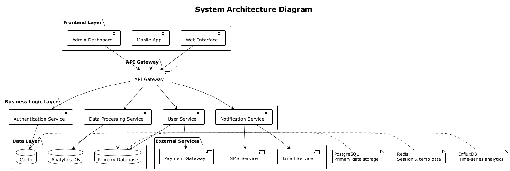

flowchart TD
A[Start] --> B{Is it working?}
B -->|Yes| C[Great!]
B -->|No| D[Debug the code]
D --> E[Fix the bug]
E --> B
C --> F[Deploy to production]
F --> G[End]
style A fill:#e1f5fe
style G fill:#c8e6c9
style C fill:#fff3e0
style D fill:#ffebee
Quarto Example
Eric Julianto
Hello World!
Ini adalah test
Profile / Bio Slide
x.com/username
github.com/username
Work Experience
Senior Developer at Tech Corp (2023 - Now)
Software Engineer at StartUp Inc (2020 - 2023)
Education
- Computer Science at University Name
Apa yahhh

Insert meme here
Contoh Tabel
| Nama | Umur | Kota | Pekerjaan |
|---|---|---|---|
| Alice | 25 | Jakarta | Developer |
| Bob | 30 | Bandung | Designer |
| Charlie | 28 | Surabaya | Data Analyst |
| Diana | 32 | Yogya | Project Manager |
Contoh Flowchart
Contoh PlantUML
Enterprise Architecture Diagram
LSTM Math
LSTM gating mechanism:
f_t = \sigma(W_f \cdot [h_{t-1}, x_t] + b_f) \tag{1} i_t = \sigma(W_i \cdot [h_{t-1}, x_t] + b_i) \tag{2} C_t = f_t * C_{t-1} + i_t * \tilde{C}_t \tag{3} h_t = o_t * \tanh(C_t) \tag{4}
Cross-ref: Equation 1 (forget), Equation 3 (update)
LaTeX Equations
\begin{gather*}
a_1=b_1+c_1\\
a_2=b_2+c_2-d_2+e_2
\end{gather*}
\begin{align}
a_{11}& =b_{11}&
a_{12}& =b_{12}\\
a_{21}& =b_{21}&
a_{22}& =b_{22}+c_{22}
\end{align}
Learn more: LaTeX Equations
Code Example
import torch
import torch.nn as nn
class LSTM(nn.Module):
def __init__(self, input_size, hidden_size):
super(LSTM, self).__init__()
self.hidden_size = hidden_size
# Gates: forget, input, output
self.W_f = nn.Linear(input_size + hidden_size, hidden_size)
self.W_i = nn.Linear(input_size + hidden_size, hidden_size)
self.W_o = nn.Linear(input_size + hidden_size, hidden_size)
self.W_C = nn.Linear(input_size + hidden_size, hidden_size)
def forward(self, x, h_prev, C_prev):
combined = torch.cat([x, h_prev], dim=1)
f_t = torch.sigmoid(self.W_f(combined)) # Forget gate
i_t = torch.sigmoid(self.W_i(combined)) # Input gate
C_tilde = torch.tanh(self.W_C(combined)) # Candidate
C_t = f_t * C_prev + i_t * C_tilde # Cell state
o_t = torch.sigmoid(self.W_o(combined)) # Output gate
h_t = o_t * torch.tanh(C_t) # Hidden state
return h_t, C_tCode Highlighting
// Async/await with error handling
async function fetchUserData(userId) {
try {
const response = await fetch(`/api/users/${userId}`);
if (!response.ok) {
throw new Error(`HTTP ${response.status}`);
}
const userData = await response.json();
return userData;
} catch (error) {
console.error('Failed to fetch user:', error);
return null;
}
}// Pattern matching & Option handling
fn process_config(config: Option<Config>) -> Result<String, ConfigError> {
match config {
Some(cfg) if cfg.is_valid() => {
println!("Processing config: {}", cfg.name);
Ok(format!("Config {} loaded", cfg.name))
},
Some(_) => Err(ConfigError::Invalid),
None => Err(ConfigError::Missing),
}
}Advanced Layouts
Variasi Layout
Two Columns: Text & Text
Left Side
- Feature A
- Feature B
- Feature C
Detailed explanation of the left side content.
Right Side
- Benefit X
- Benefit Y
- Benefit Z
Comparison or additional details on the right side.
Two Columns: Text & Image
Context
Here is the description of the system architecture shown on the right.
- Modular design
- Scalable components
- Secure data flow
Figure 1: System Architecture
Two Columns: Image & Text
Meme Illustration
The Visuals
The image on the left demonstrates the visual impact of the project.
- High engagement
- Viral potential
- Clear messaging
Image with Centered Caption
Figure 1: System Architecture Diagram showing the interaction between components
Callouts & Alerts
Note
This is a standard note callout. Good for general information.
Important
This information is crucial and should not be ignored.
Tip
Pro tip: Use callouts to highlight key takeaways!
Fragments (Animations)
Items will appear one by one:
- First item appears
- Then the second item
- Finally the third item
Pause! This text appears after a click.
Tabsets for Code
Full Scale Image
Custom CSS In-Slide
Custom Styled Box
This box is styled using inline CSS just for this slide.
Advanced Features
Interactive Charts (OJS)
Great for Tech Leads pitching data!
Slide Backgrounds
You can set full-screen background images.
- Good for cover slides
- Separation sections
- Emotional impact
Absolute Position
Position elements precisely where you want them.
Stack Layout (Overlays)
Images are stacked on top of each other!
Advanced Fragments
Animate text elements with different effects:
This text slides up while fading in.
This text turns red when focused.
This text gets crossed out.
This text fades in, then fades out partially.
Academic Citations
“Attention is all you need” paper (Vaswani et al. 2017) changed the AI landscape. Also, clean code is important (Martin 2017).
References
Martin, Robert C. 2017. Clean Architecture: A Craftsman’s Guide to Software Structure and Design. Prentice Hall.
Vaswani, Ashish, Noam Shazeer, Niki Parmar, Jakob Uszkoreit, Llion Jones, Aidan N Gomez, Łukasz Kaiser, and Illia Polosukhin. 2017. “Attention Is All You Need.” Advances in Neural Information Processing Systems 30.
Q&A
Thank you for listening!